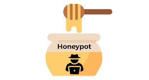

Hello There...
I’m Brendan Helms, a passionate cyber enthusiast dedicated to unraveling the intricacies of digital security. My interests lie in crafting tools like SSH honeypots, building NIST-compliant password checkers, and analyzing logs with Splunk to uncover threats. I thrive on exploring network vulnerabilities using Kali Linux and mastering Python for security projects. I recently received a degree in Cybersecurity at the University of Central Missouri, where I’ve honed my skills in log ingestion, query-based analysis, and secure coding. When not coding, I’m diving into cyber trends, always eager to fortify the digital world.
Certifications
Here are some of the certifications I have earned:

CompTIA Security+

Google Cybersecurity Professional
Featured Projects
Here are some of my favorite projects I've worked on so far:
NIST 800 63-B Password Checker Script
I created a Python password strength checker based on NIST Special Publication 800-63B: Digital Identity Guidelines. It evaluates passwords against modern security standards, emphasizing length, usability, and protection against common or compromised passwords over arbitrary complexity rules.
GitHubLocal Socket Honeypot
I developed a Python-based SSH honeypot that mimics a server on port 22, using the socket module to listen for connections and log attempts to honeypot.log. This project sharpened my skills in network programming, socket handling, and log management.
GitHubSplunk Security Scenario
Using Splunk's Search and Reporting tool, I investigated failed SSH login attempts for the root account on the mail server. This exercise honed my skills in log ingestion, query-based searching, and basic security analysis using Splunk.
GitHubSkills
Here are some of my skills, related projects, and their proficiency levels:
Download My Resume
If you'd like to learn more about my experience and skills, feel free to download my resume:
Download My Resume